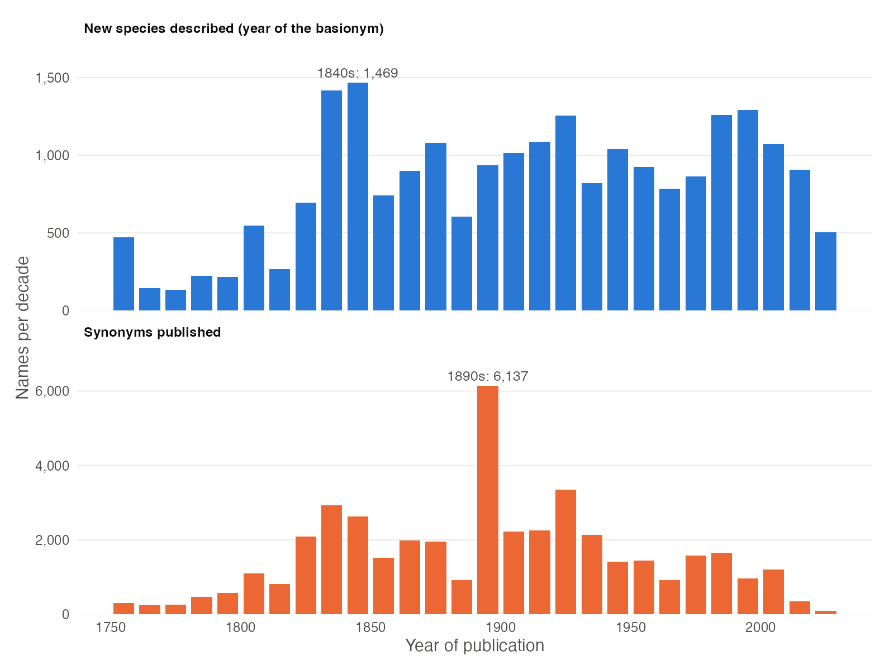
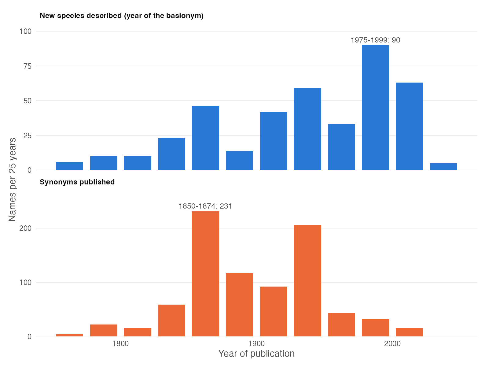

Plotting species discovery and synonymy over time
Source:vignettes/plotting_discovery_timeline.Rmd
plotting_discovery_timeline.RmdHere in this article, we show how to use the package’s function
discoveryGraph to plot when the species of any plant family
or genus were discovered, and when their synonyms were published. The
graphic has two panels: the number of species described and the number
of synonyms published in each decade (or any other period). While
accGraph shows the cumulative discovery of species,
discoveryGraph shows when the taxonomic work, i.e.
describing new species and renaming them, was most intense.
A species is counted in the year of its basionym, i.e. its oldest
homotypic name, which is the year the species was discovered. For
example, a species described in 1805 and transferred to another genus in
2001 counts as discovered in 1805.
Setup
Install the latest development version of expowo from GitHub:
#install.packages("devtools")
devtools::install_github("DBOSlab/expowo")1. Mining the species list with synonyms
discoveryGraph needs the accepted species and their
synonyms, with the publication of each name. Use
powoSpecies with synonyms = TRUE. The first
search downloads the data of the World Checklist of Vascular Plants
(about 90 MB) only once, so any following search takes a few
seconds.
fab <- powoSpecies(family = "Fabaceae",
synonyms = TRUE,
verbose = FALSE)2. Plotting species discovery per decade
Just provide the output of powoSpecies to
discoveryGraph. The busiest decade of each panel is
labelled. Setting save = TRUE writes the graphic within a
subfolder named after the current date, in any of the formats JPG, PDF,
PNG or TIFF.
discoveryGraph(inputdf = fab,
save = TRUE,
dir = "results_discoveryGraph",
filename = "discovery_graph_Fabaceae",
format = "png")
FIGURE 1. Number of Fabaceae species described (top) and synonyms published (bottom) per decade.
Legume species have been described at a steady pace for two
centuries, with peaks in the 1830s-1840s, the time of the works of G.
Bentham and of E. Boissier on the flora of the Orient, and again since
the 1980s. Synonyms, in turn, peak in the 1890s: more than half of the
synonyms published in that decade (3,545 of 6,137) come from Kuntze’s
Revisio Generum Plantarum (1891). The last bars are lower
because the current decade is not over yet.
3. Choosing the length of each period
For smaller families, decades may hold too few names. The argument
bin sets the number of years in each bar, e.g. 25 years for
Lecythidaceae.
lecy <- powoSpecies(family = "Lecythidaceae",
synonyms = TRUE,
verbose = FALSE)
discoveryGraph(inputdf = lecy,
bin = 25,
save = TRUE,
dir = "results_discoveryGraph",
filename = "discovery_graph_Lecythidaceae_25years",
format = "png")
FIGURE 2. Number of Lecythidaceae species described (top) and synonyms published (bottom) every 25 years.
The busiest period for describing Brazil nut species was 1975-1999,
and 39% of the species were described since 1975, reflecting the
monographic work on the family by S. A. Mori, G. T. Prance and
colleagues. Most synonyms, in contrast, were published in 1850-1874 and
1925-1949.
4. Using the graphic object
discoveryGraph returns a ggplot object, so
the graphic can be customised with any function of
ggplot2. The data of the graphic has the number of
names (names) in each period (period) for each
panel (what).
p <- discoveryGraph(fab, verbose = FALSE)
# Number of species discovered in each decade
p$data[p$data$what == levels(p$data$what)[1], c("period", "names")]
# Adding a title
p + ggplot2::ggtitle("Discovery of legume species")